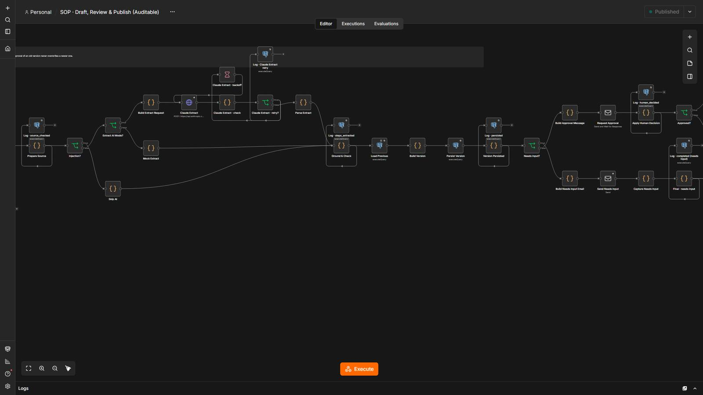
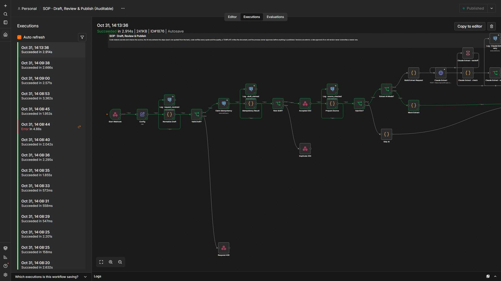
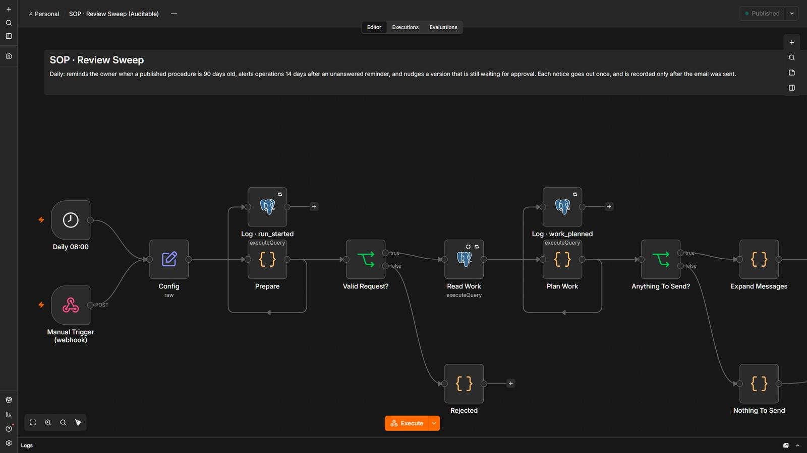

Turn how your team really works into a procedure someone can follow.
Paste a call transcript or notes. The system redacts secrets, the AI lists the steps the text describes, and code checks that every step is quoted from it. A template writes the document, the process owner approves it, and only then is it published as a versioned page.
5 steps, and who decides each one.
- Code decides
Redact and check the source
Passwords, API keys and card numbers are redacted before the AI or the database see the text. A text that gives orders to the system never reaches the model.
- AI reads
Extract the steps
The AI lists the steps the text describes, each with the quote it came from. Code drops any step that is not in the text.
- Code decides
Check the quality
Too few steps, too many dropped, no owner, duplicates and decisions with no outcome. A weak draft goes back to its author, not to approval.
- A person
The owner approves
A template writes the document and shows what changed against the published version. No clear answer means not published.
- Code decides
Publish atomically
One statement publishes the version and replaces the old one. A late approval of an old version never overwrites a newer one.
3 workflows
SOP · Draft, Review & Publish
A process description enters: code redacts secrets, the AI extracts the steps, code verifies every quote and the quality, a template writes the SOP and the owner approves before it is published.
Step by step
- Validates the request; the same text for the same procedure never runs twice.
- Redacts passwords, API keys and card numbers before the AI or the database see the text; a text that tries to give orders to the system never reaches the model.
- The AI lists the steps the text describes; every step must be quoted from it and code drops what is not in the text.
- Code checks the quality (too few steps, too many dropped, no owner, duplicates, a decision with no outcome); a weak draft goes back to its author, not to approval.
- A fixed template writes the document and shows what changed against the published version; the owner approves by email (fail closed) and publishing is one atomic statement.
SOP · Published Page
Read-only page for a published procedure, with its steps, owners and the quote each one came from.
Step by step
- Validates the id and the version before touching the database.
- Shows only published versions (or a replaced one, marked as such).
- A draft and an unknown id get the same 404.
- Everything from the source text is escaped.
SOP · Review Sweep
Every day it reminds the owner when a procedure is 90 days old and alerts operations if nobody acts.
Step by step
- Reads the published procedures and the versions still waiting for approval.
- Code decides who is due: a reminder at 90 days, an alert 14 days after an unanswered reminder, a nudge for a draft nobody decided.
- Sends each notice once and records it only after the email went out.
- Publishing a new version restarts the cycle.
The system in n8n.
Screenshots of the actual editor and of a real execution, from the local test environment. Click one to open it full size.





